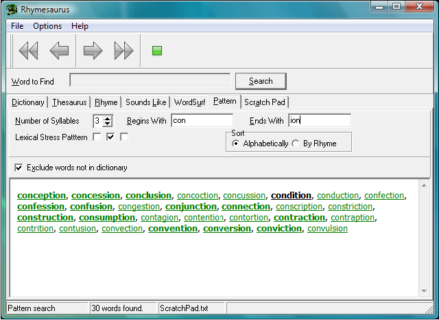

|
Use the Pattern Matching Tool |
Top Previous |
|
The Pattern Matching tool allows you to search for words based on their number of syllables and pattern of lexical stress. This is especially useful when writing metrical poetry, or anything else that requires a specific metrical pattern.

To use the Pattern Matching Tool, click on the Pattern radio button. Next, choose the number of syllables to match in the Number of Syllables edit control. Checkboxes will appear for each syllable next to the words Lexical Stress Pattern. Click on the checkbox for each stressed syllable. You may optionally enter text in the Begins With and Ends With fields. Finally, click the Search button.
The above example shows how to search for all three-syllable words, with a stressed second syllable, that begin with the letters "con" and end with the letters "ion". |